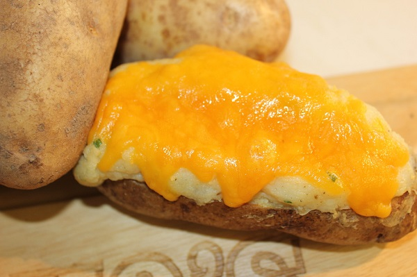
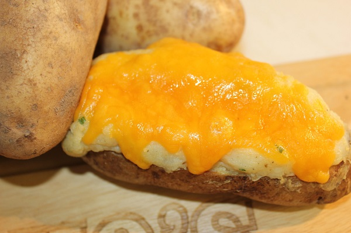

Continuing a Strong Heritage of Food Service in Chicago since 1956.
 

"For the past two years, I have traveled the South and Midwest taking in and experiencing the many styles, techniques, and flavors of BBQ.
What I have learned in the process of meeting some world class pit masters, owners, and equipment manufacturers is that BBQ has a strong history of bringing family, friends and new acquaintances together. It’s an equalizer across many social classes, and it’s a type of food when done right makes you walk away feeling good. We are excited with the launch of Sharko’s BBQ as we were when we took 1st prize for Best Sauce at Napervilles First Rib Fest on Rotary Hill." --Brian Sharko
What I have learned in the process of meeting some world class pit masters, owners, and equipment manufacturers is that BBQ has a strong history of bringing family, friends and new acquaintances together. It’s an equalizer across many social classes, and it’s a type of food when done right makes you walk away feeling good. We are excited with the launch of Sharko’s BBQ as we were when we took 1st prize for Best Sauce at Napervilles First Rib Fest on Rotary Hill." --Brian Sharko